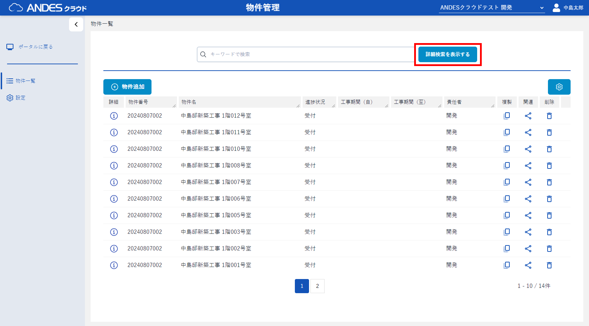

- 物件一覧から「詳細検索を表示する」ボタンをクリックします。
- 検索パターンの「
 」ボタンをクリックします。
」ボタンをクリックします。 - 「パターン追加」ボタンをクリックし、パターンを追加します。
- 画面左から、条件を設定するパターンを選択します。
- 画面右で「条件追加」ボタンをクリックし、条件を追加します。
- 「登録」ボタンをクリックし、条件を保存します。
- 画面左から編集したいパターンを選択し、「パターン編集」ボタンをクリックし、パターン名を編集します。
- 画面左から削除したいパターンを選択し、「パターン削除」ボタンをクリックし、パターンを削除します。
